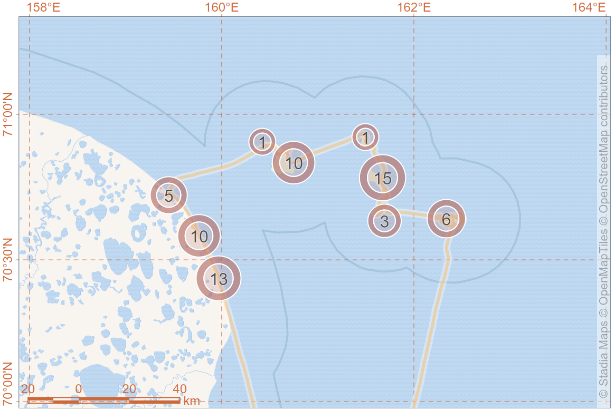

{height}
{height}
{height}
:::{class=“clarify”} On Environment Protection (2002, No. 7-FZ)
constituents “Red Data Book of the Russian Federation” :::
:::{class=“clarify”} On Wildlife (1995, No. 52-FZ)
prohibits any actions that affects adversely on Red Data Book animals :::
:::{class=“clarify”} On Protected Areas (1995, No. 33-FZ)
regulates relations in the field of protection and utilization :::
The Criminal Code of the Russian Federation (1996, No. 63-FZ)
The Basics of State Policy in the field of Environmental Development
Strategy for the Development of the Arctic Zone
Strategy for the Conservation of Rare and Endangered Animals, Plants and Fungi
The Red Data Book of rare and endangered animals of the Russian Federation (2021).
<!–
Polar bears and other rare and endangered Animals are listed in the Red Data Book approved by the Ministry of Natural Resources and Environment in 2020
Strategy for Polar Bear Conservation in the Russian Federation approved by the Ministry of Natural Resources and Environment in 2022 –>
Ministry of Natural Resources and Environment
Development of state policy and legal regulation in the field of study, use, reproduction and protection of natural resources
Federal institutions (FSBIs) for management on 233 federal specially protected natural areas (PAs)
Development of PAs Network
Supervision of national project «Ecology»
Federal Supervisory Natural Resources Management Service
Control and supervision of environmental management
Management of federal PAs out of FSBIs authority
Regional authorities
Under the Red Data Book (КК РФ, 2021), polar bears in Russia are segregated into three different populations: Kara-Barents Sea population, Laptev Sea population, Alaska-Chukotka population.
In Ministry there are significant steps to replace “population” term to “subpopulation” for consistence with IUCN terms.

Figure from Polar bear strategy 2010 (Belikov et al., 2010)
Federal project «Conservation of biodiversity and ecotourism development», managed by budgetary institution “RosZapovedCenter” under Ministry of Natural Resources and Environment
Objects: polar bear and 12 other priority species
Activity: Working Group divided on Polar Bear Expert Section and 12 other species specific expert sections
“Roadmaps” for priority species conservation
Development of conservation strategies and recovery programs for priority species
“Business and Biodiversity” initiative to involve funding from commercial companies
Twenty two members
Regular meetings to discuss the most important issues and prepare documents.
Special meetings for decision making in extraordinary cases
Accepted in 2022 with horizons up to 2030.
Approved by order of the Ministry of Natural Resources and Ecology of the Russian Federation on 01 March 2022 No. 7-r.
Elit euismod rhoncus diam, varius commodo porta. Ultrices faucibus aenean nunc porta: nec mi bibendum congue semper venenatis. Ad lacus velit elementum: duis interdum risus tempor in risus dis. Quis quisque nisl, mus quam donec placerat congue laoreet. Aliquam phasellus bibendum commodo: nulla sociosqu, bibendum dui natoque himenaeos, dictumst pharetra nascetur nulla egestas.
Lorem eros imperdiet cum turpis, ultricies facilisi mi. Quam turpis rutrum leo cras. Venenatis molestie in magna tortor montes risus maecenas parturient iaculis primis; vitae eget. Fermentum pretium magnis sociis ut condimentum malesuada suspendisse, urna justo consequat scelerisque. Quisque congue convallis, ornare suspendisse hendrerit taciti? Mattis ac himenaeos pellentesque; penatibus justo lectus non quam dignissim proin, arcu congue dis diam tincidunt ullamcorper.

Compiled by Systematic Conservation Consultancy
Managed by national and regional reserves.
Content: Category and status, distribution, habitat, population size, limited factors, conservation actions, required conservation actions
ref to [RedBook2021-pbear]
| Subpopulation | Status (2001) |
|---|---|
| BS/KS | 4 - Uncertain |
| LV | 3 - Rare |
| CS | 5 - Rehabilitated and Rehabilitating |
| Subpopulation | Status | IUCN-ref Red list | IUCN Red List | Priority |
|---|---|---|---|---|
| BS/KS/LV/CS | 3 - Rare | VU A4abd | VU A3c | I - Highest priority for conservation action |
Second Edition (Kochnev and Litovka, 2022)
Status: 5 - Rehabilitated and Rehabilitating.
Provided by VNII Ecology and Geography Institute.
1 - Ice extent acts on shipping, 2 - unstable shipping channel, 3 - iceberg drift, 4 - landslides, 5 - coastal thermoambrasia
Cases are relative to Laptev Sea. Conclusions are circumpolar.
Polar bear welfare
Habitat changes
Prey unavailability ➪ increased walk activity ➪ energy lost
Thermal destruction of maternal dens
PB-human conflicts
Details in (Belikov et al., 2021a)
Franz Josef Land
Young walruses are prey for polar bear.
Expert opinion: population size for Sptitsbegen and FJL is less than 1000
Details in (Belikov et al., 2021b).
Climate changes
Sea ice conditions with retrospective 50-70 years
The most significant changes in last two decades
Habitat stress for certain polar bear prey species
Human impact presents
Details in (Belikov et al., 2022a).

ArcNet is a network design framework to help achieve ocean-scale, area-based marine conservation in the Arctic. The framework is centred around a network of 83 priority areas for conservation (PACs) designed through expert-driven systematic conservation planning using conservation targets for over 800 conservation features (CFs) that represent Arctic biodiversity. These CFs, their targets, and PACs were identified systematically based on their biological and ecological significance; therefore, implementing the ArcNet PACs as a network of protected and conserved areas will strengthen the Arctic Ocean’s biodiversity and help nations deliver on their UN-level commitments to protect 30% of oceans by 2030 (Convention on Biological Diversity, 2022).

James et al. (2024)

Scientific research projects on polar bears were conducted by individual scientific institutions and non-governmental organizations.
Compiled by Systematic Conservation Consultancy
Management of protected areas.

The study of polar bears in the RANP consists of several components: spring survey of maternal dens on Alexandra Land Island (Franz Josef Land archipelago), data from expeditions of IPEE RAS, counting the number of polar bear encounters by park staff during tourist cruises, and analyzing data from camera traps located in the north of Novaya Zemlya.
Maternal den distribution

Supported by RosZapovedCenter in 2022
Maternal den distribution, ground and aerial surveys.

Operated by State Reserve ‘Lenskie Pillars’. Supported by RosZapovedCenter in 2023.
Maternal den survey, captures, ground and aerial surveys.

Aerial survey 2021 “Master of the Arctic”
Polar bear researches are scarce and systematic (Гладышева, 2022). Polar bear occurrence. Planning surveys in 2025
Polar bear distribution, behaviour, safety.
Researches were carried out jointly with Geography Institute of the Russian Academy of Sciences.
The program for polar bear researches in the Russian Arctic
Principal team:
Ilia Mordvintsev - expeditional leader, polar bear ecology
Evgeny Ivanov – immobilizer, biologist
Nikita Platonov - data analysis
Involved specialists:
Pavel Sorokin - genetics
Maxim Vechersky - microbiology
Sergei Naidenko - management, predator’s reproductivity, deceases
Vyatcheslav Rozhnov - coordination, mentor
Aerial survey in the Laptev Sea (2021), seropositivity, captures in 2022 and 2023, microbiology.
Polar bear and marine mammals researches
Expeditionary activity for onshore and offshore researches and surveys
Trainings for personal security in the polar bear range
Organization and control of the territorial security system
Neural network and computer vision software development for polar bear detection
Organization of instrumental aerial surveys of marine mammals and polar bears.
Provided by Institute of biological problems of the North and National Park Beringia. :
Database of polar bear occurrence and their footsteps.
Polar bear occurrence depends from sea ice conditions and food availability
No obvious marks for tendency of change.
Provided by Yakutian Directorate of Biological Resources []
Polar bears observation in Kurdigino-Krestovaya
Provided by State reserve Lensky Pillars in summer 2022.
Total 6 polar bears with good body conditions: 1F+1C, 2F, 2M.

Provided by National Park Russian Arctic.
2022:
In April, record of 20 unique adults, including 2F+2C0 and 2F+1C0.
Annual by staff: 103 adults and 20 cubs (C0, C1)
2023:
Generally:
In summer, bears usually move along the coastline in search of stranded marine mammals, stopping near bird colonies or walrus rookeries.
First time observation of F+3C0 in 2022.
Provided by VNII Ecology and Geography Institute.

1 – Bears encountered; 2 – Fresh bear tracks; 3 – Old bear tracks; 4 – Female with her cub on iceberg; 5 – Boundary of Arctic Basin; 6 – Study area
32 polar bears, 73 (14 old, 59 fresh) traces of their tracks during 37 days drifting in ice in March-April 2019. Details in (Tyuryakov et al., 2023).
Provided by State reserve Wrangel Island.

Ground sites for survey
UAV since 2020
Missing planning, programmed control
Unbroken coverage
New model site “Central mountains” since 2021.
Parameters:
Den georeference
Footprints around den
Animals presence/absence
Number of animals
| Year | Season | Dens | Families | Litter size |
|---|---|---|---|---|
| 2022 | 14 March - 10 April | 12 | 23 | 1.73 |
| 2024 | 08 March - 17 April | 21 | 38 | 1.76 |
Provided by State reserve Lensky Pillars.
Surveys in 2021, 2022, 2023.
| Year | Dens | With females | Families | Loners | Adults | COYs |
|---|---|---|---|---|---|---|
| 2022 | 20 | unk | 6 | 15 | 20 | 24 |
| 2023 | 26 | 13 | 5 | 17 | 24 | 41 |
Provided by National Park Russian Arctic.
Females with cubs start emerging from dens on Franz Josef Land in mid-March.
During last five years, suitable for denning locations on Alexandra Land have been clarified.
Provided by VNII Ecology and Geography Institute.
Habitat Suitable Modeling method based on a landscape approach
location of dens
environmental conditions
categories of suitability
region-specific analysis
Ground survey
Several model sites
Stratification (for extrapolation)
Aerial survey
Effective for Gerald Island
Several surveys
Surveys include model sites
Mixed survey
Coverage of aerial survey depends on density of open dens on each stata
Single day survey with extrapolation coefficient
Provided by VNII Ecology and Geography Institute.

Survey routes and polar bear observations in 2019
Detail in (Regehr et al., 2023).
Litter size
| Age | Average |
|---|---|
| C0 | 1.61 |
| C1 | 1.51 |
Provided by State reserve Wrangel Island in autumn season.
Protocol of 15 ground routes since 2016 (Russia-USA collaboration)

540 km of 14 ground routes with registration of 266 polar bears in 2023
Fatness:
Litter size
| Age | Families | 1C | 2C | 3C | Average |
|---|---|---|---|---|---|
| C0 | 15 | 6 | 9 | 0 | 1.6 |
| C1 | 5 | 2 | 2 | 0 | 1.4 |
Provided by EcoFactor and National park Wrangel Island in 2022.
UAV “Orlan-10”:
Altitude 200-5000 m
Range 1000 km
Duration 12 h
UAVs unit:
3 to survey
2 to survey, 1 to relay
Design
Equidistant parallel transects
Cross-overlapping 5-10%
Study area coverage: 10-20 %
4 model sites
Photo cell size: 2-7 cm
Georef accuracy: 3-8 cm
| Period | Stage |
|---|---|
| 30 August - 06 September | Recognition, setting up |
| 08 - 16 September | Surveys |
Results
17 flights, 8317 km, 23K images
| Stage | Observed | Adjusted |
|---|---|---|
| Recognition | ||
| Model sites | 729 | |
| Coastline | 135 | 135 |
| Total | 506 | 864 |

Polar bear registration between 30 August and 16 September 2022
Provided by National park Lenskie Pillars and Severtsov Institute in early October 2022.

Total: 66 polar bears in coastal zone.
Provided by EcoFactor and National park Lensky Pillars in September 2022.
UAV “Orlan-10”: 2700 km, 25K images
NN detection trained on 2016 and 2022 results
Result: 176 polar bears
Provided by Severtsov Institute and National park Ust-Lensky in May 2021
Provided by Institute of biological problems of the North and National Park Beringia.

Abundance dynamics of polar bears at Cape Schmidt, fall 2023

Comparative size of polar bear aggregations at Cape Schmidt in August-October before the sea freezing
Polar bears continue to actively use terrestrial habitats on the capes and islands of the coastal part of the Chukchi Sea in the summer-autumn period
Even after a three-year absence of walruses, polar bears continue to visit Cape Schmidt and its environs, although they have ceased to form stable long-term groups
Despite the dispersed distribution along the coast, polar bear visits to populated areas have become more frequent
The villages of Ryrkaypiy and Cape Schmidt retain the status of a “hot spot” in the relationship between people and predators, which must be taken into account during the implementation and when planning the development of any economic activity
Provided by Severtsov Institute
Pathogens:
Canine distemper virus
Herpes simplex virus
Parvovirus
Toxoplasma
Trichinella (Trichinella sp.)
Mycoplasma (Mycoplasma sp.)
Candida (Candida sp.)
Chlamydia (Chlamydia sp.)

Over the last 10 years, an increased share of animals seropositive to Trichinella and Canine distemper virus has been noted in the Barents Sea area (Naidenko et al., 2023).

Seropositive for Trichinella for extended spatial and temporal range

Seropositive for Canine distemper virus for extended spatial and temporal range
Total amount of natural antibodies
Lysozyme concentration
An activity of the system of complement


Details in Vecherskii et al. (2023)
Provided by Severtsov Institute
The hypothesis that intestinal microbiome and metabolism may change as a result of the bears using new food items that are not typical for them due to climate change and an increase in the ice-free period in the Arctic, which is why they more often remain on the shore and visit human-populated areas.

Composition of the intestinal bacterial community at the family level within the studied groups: anthropogenic (A), natural (N)
Feeding on human waste does not cause any signs of dysbiosis and probably leads to adaptive changes in the bacterial microbiome.
Emergence of fungal facultative pathogens increases the risk of infections.

Data were collected and processed.
Re-analysis in 2023.
Searching for publisher.
Provided by Severtsov Institute
PCBs concentration
Exceed valued for other regions
NZ 2020 and NZ 2021 extremely high.
FJL 2021 in range
Provided by Severtsov Institute
Mercury concentration
Average 2.4 ± 1.5 μg/g
Insignificant differences between NZ and FJL
The lowest in the Arctic as in Svalbard (Lippold et al., 2022)

Assumed local groups
Details in (Sorokin et al., 2023).
Provided by Severtsov Institute
Assessed polymorphism:
17 nuclear DNA microsatellite loci
610 nucleotide long mtDNA D-loop fragment
Distribution of polar bears with identified haplotypes
Sit metus penatibus nibh consequat quis gravida praesent donec – consequat, sodales fermentum vulputate! Semper eget porta fames egestas. Integer convallis cubilia libero vel eros mattis blandit elementum blandit conubia fermentum ridiculus.
Provided by State reserve Lenskie Pillars and Severtsov Institute in October 2022.
One single female, very high BCI. Short-term period of biotelemetry.
Provided by Severtsov Institute in October 2023.
One single male, no transmitter.
Provided by Marine mammals research and expeditional center in December 2021 and January 2022.
Two COYs from the same litter, both males, 75 kg each.
Stage 1: sedated and flown 100 km north. Returned after 18 days
Stage 2: re-tagged and transported to 350 km NE to Gydan peninsula. Remained 10 and 17 days tags indicated that COYs moved together to ice with favourable conditions for seals.
Provided by Institute of biological problems of the North and National Park Beringia together with international group.
Efficiency is high (Wilder et al., 2022).
Limitations for transportation on airplanes (TSA)
Provided by Marine mammals research and expedition center.
Control of the territory
All-round view
Absence of blind slopes
Compliance the rules of behavior in the polar bear habitat.
An initiative to involve new participants to data collection
State reserve “Wrangel Island”
National park “Russian Arctic” (Franz Josef Land, Novaya Zemlya)
Resource reservation “Curdigino-Krestovaya”
Adipiscing curae vitae himenaeos facilisis commodo ullamcorper aenean habitasse donec proin aenean! Condimentum arcu laoreet euismod sociis donec vel, fringilla porttitor sem ut. Neque laoreet class in potenti class rutrum nibh, purus aptent lectus nostra dui. Etiam consequat egestas sed mi turpis sagittis commodo. Iaculis nulla imperdiet arcu cum vitae fermentum!
Adipiscing bibendum congue pharetra sodales ridiculus sem, netus mattis, purus vulputate. Netus vehicula posuere metus ornare himenaeos commodo! Feugiat condimentum cras dignissim ullamcorper, dictumst condimentum malesuada imperdiet fermentum. Dapibus ridiculus nisl purus quam vulputate per dis fermentum augue!
Polar bear detection on photos after aerial surveys
Small sample size for training (markup)
High FP and FN errors due to low contrast between objects and background
High backend dev cost
Detection and segmentation branches
Other animals included for specificity
Getting support for science
Involving young to science and to the Arctic

Expansion
by host: from Chukotka’s departament to Ministry of Nature
by scale: from polar bears to Arctic ecosystems
by format: from face-to-face to mix
Provided by Clean seas fund

Bus with interactive excibition
Merch
Ecological projects and co-projects
Supporting scientific aerial surveys of pinnipeds and polar bears
Series of lectures
Exhibition of Achievements of National Economy
Photographic exhibition «Golden tortoise»
Frozen
Frozen
Thank you


{kind=link}